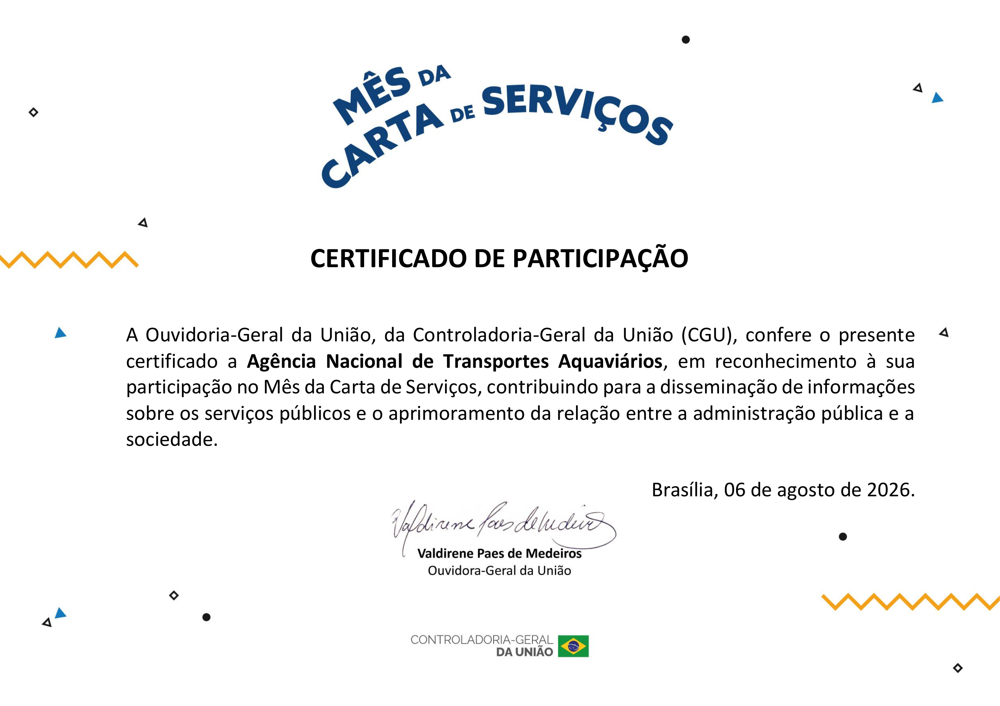

ANTES DE COMEÇAR
Reconhecimento da CGU
Em 6 de agosto de 2026, a Ouvidoria-Geral da União conferiu à ANTAQ o certificado de participação no Mês da Carta de Serviços. O reconhecimento destaca a contribuição da Agência para divulgar informações sobre os serviços públicos e aproximar a administração da sociedade.
